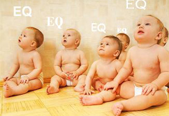

国际标准EQ测试
31228 人测试过
2012-03-26 发布

② 本测试共包括单项选择题合计33题，完成测试约需要15分钟
③ 测试不可重复，做题时请按实际情况作答，系统会基于答题情况自动生成一份专业报告
④ 测试完成后，你可以在个人中心查看随时查看测试报告
开始测试
情商（EQ）：一个近几年才提出来相对智商（IQ）而言的心理学概念，是情绪的商数，或称情绪智慧；指人的乐观与悲观，急躁与冷静，大胆与恐惧，沉思与直觉等情绪反应的程度。
这是一组欧洲流行的测试题，共33题，最大EQ为174分。如果你已经准备就绪，请点击开始答题，从选项中选择一个和自己最切合的答案。
温馨提示:
① 本测试为付费测试，体验价格为：0.00元② 本测试共包括单项选择题合计33题，完成测试约需要15分钟
③ 测试不可重复，做题时请按实际情况作答，系统会基于答题情况自动生成一份专业报告
④ 测试完成后，你可以在个人中心查看随时查看测试报告
体验价￥0.00原价￥12.00
猜你喜欢：